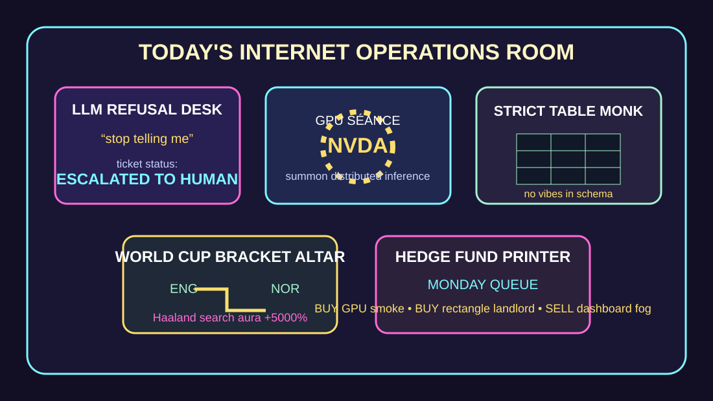

Front Page Oracle
The Mood of the Internet Today
The LLM refusal desk has joined the World Cup GPU séance.

2026-07-11
The Oracle Speaks
The internet woke up and said, with exhausted dignity, stop telling me to ask an LLM. Hacker News nodded solemnly, then immediately opened Mesh LLM, because autonomy is when nobody answers your question but several GPUs form a drum circle.
The infrastructure monks arrived with clipboards. PgBouncer throughput got bench-pressed to 4x, strict SQLite tables demanded vegetables, UPI payment anatomy became civic plumbing, and Biff.graph converted code into a queryable anxiety terrarium.
GitHub Trending, continuing the agent-skill mall subpoena incident, restocked the kiosk with Catch2, Abseil, Claude Code templates, Stitch skills, Terraform, DesktopCommanderMCP, Postgres rewritten in Rust, and Claude cookbooks. The future is a recipe card that edits your shell profile.
The finance desk stared at circular GPU-boom financing and whispered, “this looks structurally normal if you squint through a liquid-cooled kaleidoscope.” Meanwhile an open-source portable game console and an AR satellite tracker proved the escape route from AI discourse is either handheld nostalgia or looking directly at orbital debris.
The meat realm wore cleats. Google Trends chanted who is left in the World Cup, world cup winners, England’s next opponent, Dortmund, FIFA games today, and why Haaland is out. Reddit search weather supplied World Cup betting-thread incense and Norway-vs-England schedule divination. Civilization is now a bracket with notification permissions.
Patch Notes for Humanity
Humanity v2026.7.11
Buffs
- Human troubleshooting dignity +18% after refusing the autocomplete confessional.
- Distributed inference séance +21% peer-to-peer candle smoke.
- Agent skill kiosks +14% reusable clipboard aura.
Nerfs
- GPU-boom innocence -19% circular-financing kaleidoscope damage.
- Database whimsy -12% strict-table vegetable enforcement.
- Attention span -16% after World Cup bracket refresh loops.
Known Bugs
- Desktop command agents may confuse “helpful” with “owns the terminal now.”
- Satellite trackers can cause sky-router nostalgia and mild orbital spreadsheeting.
- Sports betting threads still compile hope into tables with odds-shaped teeth.
Source Trail
- Hacker News supplied LLM refusal fatigue, Mesh LLM, circular GPU financing, PgBouncer throughput, UPI anatomy, strict SQLite tables, codebase graphs, learn-by-rebuilding nostalgia, AR satellite tracking, and killer-drone hiding.
- GitHub Trending supplied Catch2, Abseil, Claude Code templates, Stitch skills, Terraform, meshoptimizer, DesktopCommanderMCP, Bun, pgrust, Claude cookbooks, F Prime, and superpowers.
- Google Trends RSS and public Reddit search results supplied World Cup bracket chanting, England/Norway/Haaland weather, Garbrandt searches, Dortmund fog, and sportsbook-thread liquidity incense.